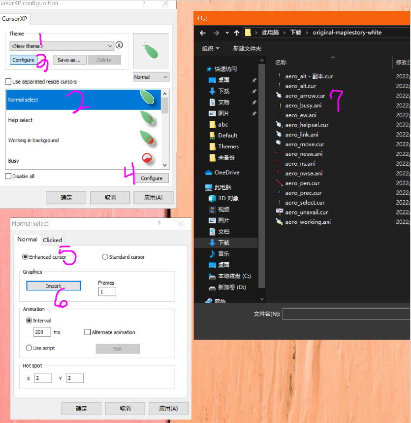
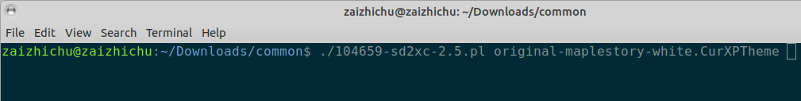
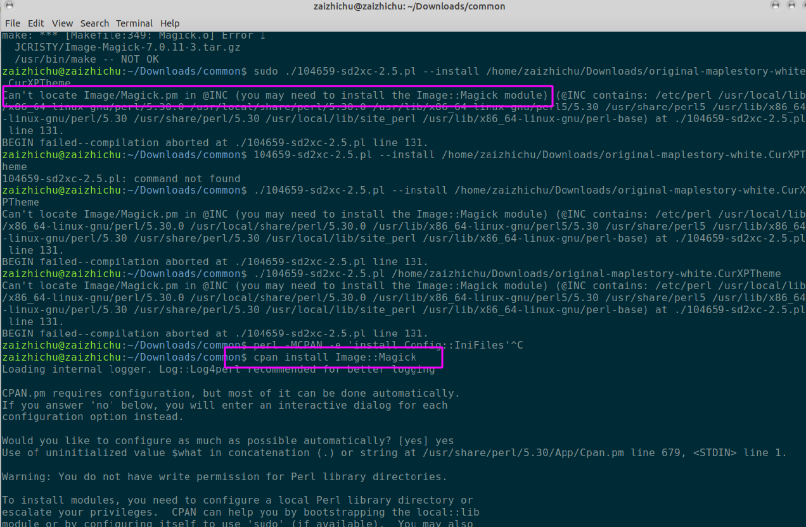

Lith Harbor
制作冒险岛鼠标指针制, Linus版本
基于网上搜的 "MapleStory Cursors" 都是 Windows 版本,基本找不到 Linus 跟 MapleStory 有关的东西,然后试着自己转换下了.
STEP2:
运行 CurXPCpl.exe (点击运行没反应考虑右击管理器权限运行)
按照下图顺序制作鼠标状态
最后保存为 .CurXPTheme 格式的文件
如: original-maplestory-white.CurXPTheme
STEP3:
在Linus 系统上下载 sd2xc.pl 这一个文件
直接执行(注意文件权限)
提示
Can't locate Config/IniFiles.pm in @INC (you may need to install the Config::IniFiles module)
安装依赖
perl -MCPAN -e 'install Config::IniFiles'
提示
Can't locate Config/IniFiles.pm in @INC (you may need to install the Image::Magick module)
安装依赖
cpan install Image::Magick
转换好的压缩包跟 sd2xc.pl 同目录
如: original-maplestory-white.tar.gz
STEP4:
最后解压转换好的包,根据自己桌面系统自行安装:)